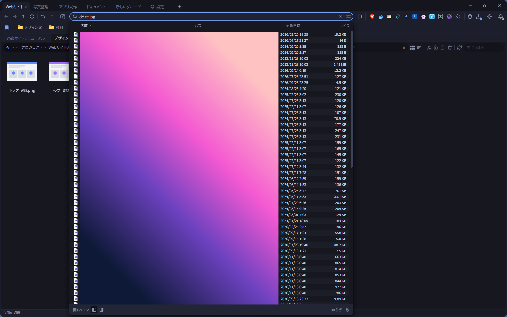
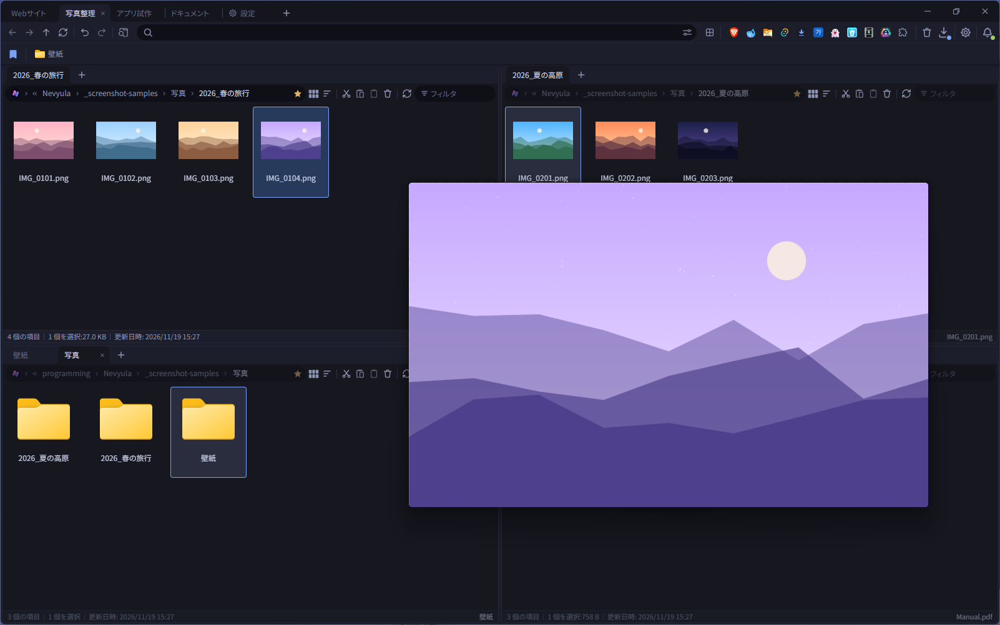

特徴
毎日のファイル操作を、軽く、迷わずに。
デザイン
Chromium のブラウザーを意識した、使い慣れたデザイン。
タブグループ＆タブ
作業内容ごとに、ワークスペースとしてタブグループを用意。タブグループごとに、最大 4 つのペインの中に複数のタブを保持できます。
プレビュー
拡張子ごとの専用のソフトを介さずに、中身をプレビューできます。
アプリ
ブラウザーの拡張機能のように呼び出せる、アプリケーションランチャーを用意。Nevyula から開くとき専用の、既定のアプリも設定できます。
通知
コピー・移動・削除などの操作に、進捗の表示つきのトースト通知を表示します。
検索
インデックスを利用した、高速なファイル・フォルダーの検索。
連携
7-Zip・Everything を利用している方は、Nevyula から使えます。
設定
かゆいところに手が届く機能を網羅しています。
画面
主な画面を紹介します。

検索
名前の一部を打つだけで、ドライブ全体から候補を絞り込みます。

プレビュー
専用のソフトを開かずに、画像や動画、文書の中身を確かめられます。